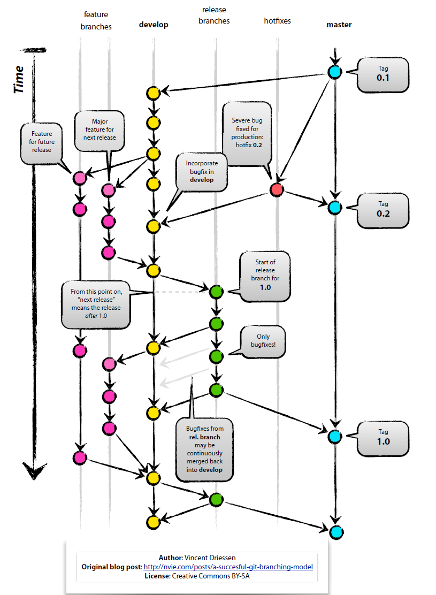

GIT
Benefits of Version Control
Version control is a system that records changes to a file or set of files over time so that you can recall specific versions later.
-
Track incremental backups and recover: Every document can be backed up automatically and restored at a second's notice.
-
Track every change: Every infinitesimal change can be recorded and can be used to revert a file to an earlier state.
-
Track writing experiments: Writing experiments can be sandboxed to copies while keeping the main file intact.
-
Track co-authoring and collaboration: Teams can work independendtly on their own files, nut merge them into a latest common revision.
-
Track individual contributions: Good VCS system tag changes with authors who make them.
Git at a glance
git commands
The git tool has many subcommands that can be invoked like git subcommand for instance git status to get the status of a repository.
The most important ones are:
init: initialize a repository clone: clone a repository status: get information about a repository log: view the history and commit messages of the repository add: add a file to the staging area commit: commit your changes to your local repository push: push changes to a remote repository pull: pull changes from a remote repository checkout: retrieve a specific version of a file
you can read more about each command by invoking the help:
git commit --help
git help commit
Git concepts
commit
A commit is a recorded set of changes in your projects file's. Try to group logical sets of changes together into one commit - don't mix changes which are unreleated.
repository
A repository is the history of all your project's commits.
Git settings
Setting your identity
Before we start, we should set the user name and e-email address. This is important because every git commit uses this information and it's also incredibly useful when looking at the history and commit log:
git config --global user.name "Sebastian Heucke"
git config --global user.email "sebastian.heucke@med.uni-muenchen.de"
git config --global core.editor nano
git config --global color.ui auto
git config --global merge.tool kdiff3
A typical git workflow


Creating Snapshots
Initializing a repository
git init
Staging files
git add file1.js # Stages a single file
git add file1.js file2.js # Stages multiple files
git add \*.js # Stages with a pattern
git add . # Stages the current directory and all its content
Viewing the status
git status # Full status
git status -s # Short status
Committing the staged files
git commit -m “Message” # Commits with a one-line message
git commit # Opens the default editor to type a long message
Skipping the staging area
git commit -am “Message”
Removing files
git rm file1.js # Removes from working directory and staging area
git rm --cached file1.js # Removes from staging area only
Renaming or moving files
git mv file1.js file1.txt
Viewing the staged/unstaged changes
git diff # Shows unstaged changes
git diff --staged # Shows staged changes
git diff --cached # Same as the above
Viewing the history
git log # Full history
git log --oneline # Summary
git log --reverse # Lists the commits from the oldest to the newest
Viewing a commit
git show 921a2ff # Shows the given commit
git show HEAD # Shows the last commit
git show HEAD~2 # Two steps before the last commit
git show HEAD:file.js # Shows the version of file.js stored in the last commit
Unstaging files (undoing git add)
git restore --staged file.js # Copies the last version of file.js from repo to index
Discarding local changes
git restore file.js # Copies file.js from index to working directory
git restore file1.js file2.js # Restores multiple files in working directory
git restore . # Discards all local changes (except untracked files)
git clean -fd # Removes all untracked files
Restoring an earlier version of a file
git restore --source=HEAD~2 file.js
Browsing History
git log --stat # Shows the list of modified files
git log --patch # Shows the actual changes (patches)
Filtering the history
git log -3 # Shows the last 3 entries
git log --author=“Mosh”
git log --before=“2020-08-17”
git log --after=“one week ago”
git log --grep=“GUI” # Commits with “GUI” in their message
git log -S“GUI” # Commits with “GUI” in their patches
git log hash1..hash2 # Range of commits
git log file.txt # Commits that touched file.txt
Formatting the log output
git log --pretty=format:”%an committed %H”
Creating an alias
git config --global alias.lg “log --oneline"
View a commit
git show HEAD~2
git show HEAD~2:file1.txt # Shows the version of file stored in this commit
Comparing commits
git diff HEAD~2 HEAD # Shows the changes between two commits
git diff HEAD~2 HEAD file.txt # Changes to file.txt only
Checking out a commit
git checkout dad47ed # Checks out the given commit
git checkout master # Checks out the master branch
Finding a bad commit
git bisect start
git bisect bad # Marks the current commit as a bad commit
git bisect good ca49180 # Marks the given commit as a good commit
git bisect reset # Terminates the bisect session
Finding contributors
git shortlog
Viewing the history of a file
git log file.txt # Shows the commits that touched file.txt
git log --stat file.txt # Shows statistics (the number of changes) for file.txt
git log --patch file.txt # Shows the patches (changes) applied to file.txt
Finding the author of lines
git blame file.txt # Shows the author of each line in file.txt
Tagging
git tag v1.0 # Tags the last commit as v1.0
git tag v1.0 5e7a828 # Tags an earlier commit
git tag # Lists all the tags
git tag -d v1.0 # Deletes the given tag
Branching & Merging
Managing branches
git branch bugfix # Creates a new branch called bugfix
git checkout bugfix # Switches to the bugfix branch
git switch bugfix # Same as the above
git switch -C bugfix # Creates and switches
git branch -d bugfix # Deletes the bugfix branch
Comparing branches
git log master..bugfix # Lists the commits in the bugfix branch not in master
git diff master..bugfix # Shows the summary of changes
Stashing
git stash push -m “New tax rules” # Creates a new stash
git stash list # Lists all the stashes
git stash show stash@{1} # Shows the given stash
git stash show 1 # shortcut for stash@{1}
git stash apply 1 # Applies the given stash to the working dir
git stash drop 1 # Deletes the given stash
git stash clear # Deletes all the stashes
Merging
git merge bugfix # Merges the bugfix branch into the current branch
git merge --no-ff bugfix # Creates a merge commit even if FF is possible
git merge --squash bugfix # Performs a squash merge
git merge --abort # Aborts the merge
Viewing the merged branches
git branch --merged # Shows the merged branches
git branch --no-merged # Shows the unmerged branches
Rebasing
git rebase master # Changes the base of the current branch
Cherry picking
git cherry-pick dad47ed # Applies the given commit on the current branch
Collaboration
Cloning a repository
git clone url
Syncing with remotes
git fetch origin master # Fetches master from origin
git fetch origin # Fetches all objects from origin
git fetch # Shortcut for “git fetch origin”
git pull # Fetch + merge
git push origin master # Pushes master to origin
git push # Shortcut for “git push origin master”
Sharing tags
git push origin v1.0 # Pushes tag v1.0 to origin
git push origin —delete v1.0
Sharing branches
git branch -r # Shows remote tracking branches
git branch -vv # Shows local & remote tracking branches
git push -u origin bugfix # Pushes bugfix to origin
git push -d origin bugfix # Removes bugfix from origin
Managing remotes
git remote # Shows remote repos
git remote add upstream url # Adds a new remote called upstream
git remote rm upstream # Remotes upstream
Rewriting History
Undoing commits
git reset --soft HEAD^ # Removes the last commit, keeps changed staged
git reset --mixed HEAD^ # Unstages the changes as well
git reset --hard HEAD^ # Discards local changes
Reverting commits
git revert 72856ea # Reverts the given commit
git revert HEAD~3.. # Reverts the last three commits
git revert --no-commit HEAD~3..
Recovering lost commits
git reflog # Shows the history of HEAD
git reflog show bugfix # Shows the history of bugfix pointer
Amending the last commit
git commit --amend
Interactive rebasing
git rebase -i HEAD~5
.gitignore example
# Byte-compiled / optimized / DLL files
__pycache__/
*.py[cod]
*$py.class
# C extensions
*.so
# Distribution / packaging
.Python
build/
develop-eggs/
dist/
downloads/
eggs/
.eggs/
lib/
lib64/
parts/
sdist/
var/
wheels/
share/python-wheels/
*.egg-info/
.installed.cfg
*.egg
MANIFEST
# PyInstaller
# Usually these files are written by a python script from a template
# before PyInstaller builds the exe, so as to inject date/other infos into it.
*.manifest
*.spec
# Installer logs
pip-log.txt
pip-delete-this-directory.txt
# Unit test / coverage reports
htmlcov/
.tox/
.nox/
.coverage
.coverage.*
.cache
nosetests.xml
coverage.xml
*.cover
*.py,cover
.hypothesis/
.pytest_cache/
cover/
# Translations
*.mo
*.pot
# Django stuff:
*.log
local_settings.py
db.sqlite3
db.sqlite3-journal
# Flask stuff:
instance/
.webassets-cache
# Scrapy stuff:
.scrapy
# Sphinx documentation
docs/_build/
# PyBuilder
.pybuilder/
target/
# Jupyter Notebook
.ipynb_checkpoints
# IPython
profile_default/
ipython_config.py
# pyenv
# For a library or package, you might want to ignore these files since the code is
# intended to run in multiple environments; otherwise, check them in:
# .python-version
# pipenv
# According to pypa/pipenv#598, it is recommended to include Pipfile.lock in version control.
# However, in case of collaboration, if having platform-specific dependencies or dependencies
# having no cross-platform support, pipenv may install dependencies that don't work, or not
# install all needed dependencies.
#Pipfile.lock
# PEP 582; used by e.g. github.com/David-OConnor/pyflow
__pypackages__/
# Celery stuff
celerybeat-schedule
celerybeat.pid
# SageMath parsed files
*.sage.py
# Environments
.env
.venv
env/
venv/
ENV/
env.bak/
venv.bak/
# Spyder project settings
.spyderproject
.spyproject
# Rope project settings
.ropeproject
# mkdocs documentation
/site
# mypy
.mypy_cache/
.dmypy.json
dmypy.json
# Pyre type checker
.pyre/
# pytype static type analyzer
.pytype/
# Cython debug symbols
cython_debug/